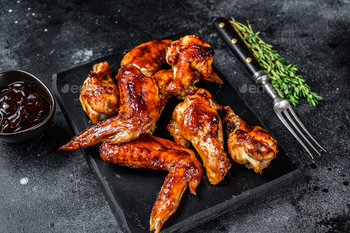

Bbq secrets
Beef
- Rib eye -
Ingredients:
- 1 (24-ounce) bone-in rib eye steak, 2-inch-thick, at room temperature
- Kosher salt and freshly ground black pepper, to taste
- 1 tablespoon canola oil
- 3 tablespoons unsalted butter
- 3 cloves garlic, smashed
- 3 sprigs fresh thyme
- 2 sprigs fresh rosemary
Directions:
- Using paper towels, pat both sides of the steak dry; season generously with 1 1/4 teaspoons salt and 1/2 teaspoon pepper.
- Heat a medium cast iron skillet over medium high heat until very hot, about 1-2 minutes; add canola oil.
- Place the steak in the middle of the skillet and cook, turning every 2-3 minutes, until a dark crust has formed on both sides, about 12-14 minutes.
- Reduce heat to medium low. Push steak to one side of the skillet; add butter, garlic, thyme and rosemary to opposite side of the skillet, tilting the skillet towards the butter and cooking until butter is foaming, about 30 seconds to 1 minute.
- Working carefully, spoon butter over steak for 1-2 minutes, turning over once, until it reaches an internal temperature of 120 degrees F for medium rare, or until desired doneness. Let rest 15 minutes before slicing.
- Serve immediately.

- Filet Mignon -
Ingredients:
- 2 10-ounce thick tenderloin beef filets (roughly 2 inches thick)
- 1 teaspoon olive oil
- 1 tablespoon fresh rosemary, removed from sprig and minced
- salt and pepper to taste
- garlic
- herb butter
Directions:
- Season both sides of the filet generously with salt and pepper and fresh rosemary. Rub with a little olive oil and let rest for 30 minutes before cooking, this is to bring the steak to room temperature and ensure your cooking times are more accurate.
- Preheat grill to high heat. Keep the lid closed and let the internal temp to get up to around 500° F.
- Place the filets face down and sear undisturbed for 5 minutes. Flip the filets and sear for an additional 5 minutes. This is ideal for medium-rare.
- For rare, sear for 4 minutes a side. Medium rare, 5 minutes. Medium, 6-7 minutes. Medium well, 8+ minutes. Remember, depending on the size of the steak, the more or less time it will take. This recipe is ideal for a 8-10 ounce portion, roughly 2 inches thick.
- Remove filets from the grill and set on a plate. Let sit for 5 minutes before serving. This is important to bring your steak to its final serving temperature. Top with a slice of garlic and herb butter and serve.
- Strip loin -
Ingredients:
- ½ cup extra virgin olive oil
- ½ cup Worcestershire sauce
- ¼ cup minced garlic
- ¼ cup steak seasoning
- 1 tablespoon red wine vinegar
- ½ teaspoon dried basil and ½ teaspoon Italian seasoning
- 4 (1/2 pound) New York strip steaks
Directions:
- If possible, rest the steaks at room temperature for about 1 hour, allowing the steaks to come to room temperature.
- Trim the beef of extra fat to prevent "flare-ups" that will burn your steak.
- It is best to apply salt and pepper at the start of the resting period. Just before starting to grill is OK if you skip the rest, or you forgot. Use coarse salt and pepper. I used my 7:2:2, which is kosher salt: pepper: garlic.
- Preheat your grill to as hot as it will go. Clean and oil well. Do not just olive oil here due to the low smoke point.
- Place on the grill over direct heat. Closed lid. Grill for five minutes on the first side. If you want crossed grill marks, you should rotate the meat 90 degrees after the first 2 ½ minutes. Flip at 5 minutes.
- Grill for approximately three additional minutes for rare, about 4 minutes for medium-rare, and 5 minutes for medium. Your time will vary with the thickness of the steaks and the grill. REMEMBER YOU ARE COOKING TO A FINAL INTERNAL TEMPERATURE, not by time. Times are provided as a rough estimate only.
- Your temperature will rise a few degrees during the post-cooking rest so cook to 3-4 degrees less. Lightly tent with foil. Allow to rest for 10 minutes before serving.
Pork
- Missouri Pork Steak -
Ingredients:
- 3 pounds pork shoulder steak
- 24 ounces light beer
- 3 tablespoon brown sugar
- 2 tablespoon smoked paprika
- 1 tablespoon onion powder
- 1 tablespoon garlic powder
- ⅛ teaspoon pepper
- 8 ounces sweet barbecue sauce
Directions:
- Cover pork shoulder steak in light beer and marinate for a minimum of one hour, up to overnight.
- Prepare a grill to low heat.
- Pat the pork shoulder steaks dry with a paper towel.
- In a small bowl, mix together brown sugar, smoked paprika, onion powder, garlic powder salt and pepper.
- Press the spice rub into the pork steaks, coating evenly on both sides.
- Grill on a covered grill (vents open) for 12 minutes per side, basting occasionally.
- Grill for an additional 5 minutes per side, brushing generously with barbecue sauce.
- Serve warm with additional barbecue sauce, if desired.
- St. Louis Pork Steaks -
Ingredients:
- 5 pork shoulder steaks
- 1 pinch seasoned salt to taste
- ⅛ teaspoon seasoned pepper to taste
- 2 cups apple cider vinegar
- 1½ cups water
Directions:
- Preheat grill to medium-low heat.
- Season the pork steaks on both sides with seasoned salt and seasoned pepper. In a large bowl, stir together the vinegar and water, and season with seasoned salt and seasoned pepper to taste.
- Lightly oil the grill grate. Place pork steaks on the grill. Baste steaks with the vinegar mixture on both sides during the first 15 minutes of grilling. Continue to cook steaks to desired doneness, 10 to 15 more minutes. Discard remaining vinegar mixture.
Chicken
- Balsamic BBQ Chicken -
Ingredients:
- 1 cup balsamic vinegar
- 3/4 cup ketchup
- 1/3 cup brown sugar
- 1 garlic clove, minced
- 1 tablespoon Worcestershire sauce
- 1 tablespoon Dijon mustard
- 1/2 teaspoon salt
- 1/2 teaspoon freshly ground black pepper
- 4 pieces chicken (any combination of breast or leg-and-thigh pieces)
Directions:
- Combine all the ingredients in a small saucepan and stir until all the ingredients are incorporated and the mixture is smooth. Simmer over medium heat until reduced by 1/3, about 15 to 20 minutes. Divide sauce, use half for basting and reserve half for serving.
- Preheat a gas or charcoal grill to medium heat. Season the meat with salt and pepper. Using a pastry brush, lightly coat meat with some of the BBQ sauce. Place meat on the grill. Cook the chicken about 8 minutes per side until internal temperature reaches 165 degrees. Cook the steaks starting at about 4 minutes per side until desired doneness. Continually brush the meat with the BBQ sauce every few minutes. Remove the meat from the grill and let rest at least 5 minutes. Serve with the reserved sauce.

- Grilled BBQ Chicken -
Ingredients:
- 4 pounds bone-in, skin-on chicken parts (legs, thighs, wings, breasts)
- Salt
- Extra virgin olive oil or vegetable oil
- 1 cup barbecue sauce
Directions:
- Oil and salt the chicken pieces
- Prepare the grill.
- Sear the chicken, then move to the cool side of the grill.
- Turn over, baste, and cook until done for 15-20 minutes.
- Sear a final time, then remove from heat.
- Serve.